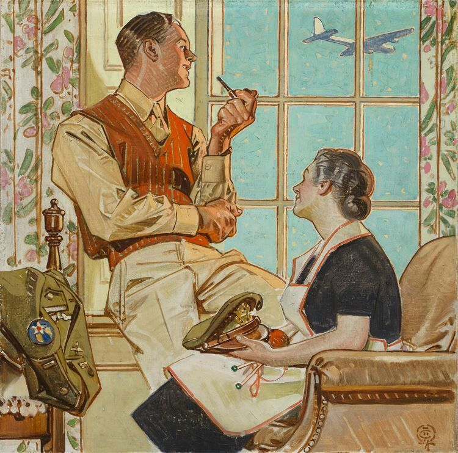
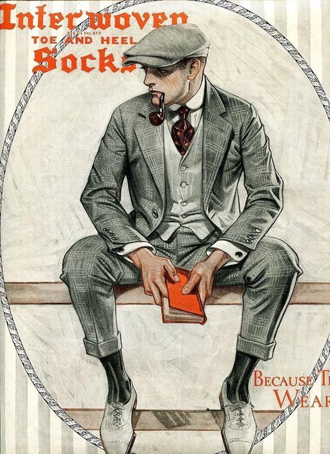
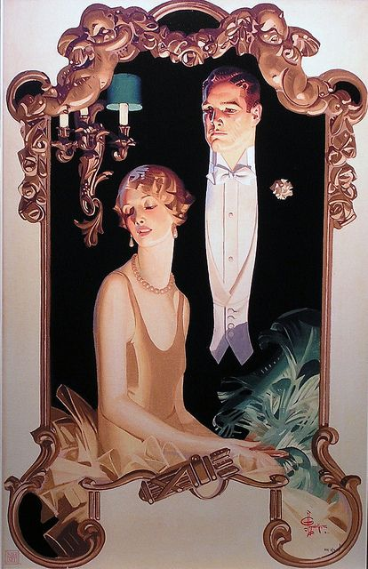
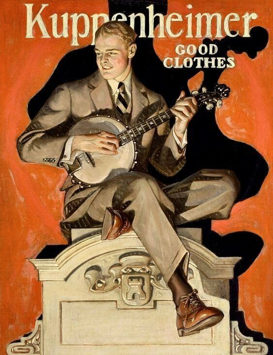
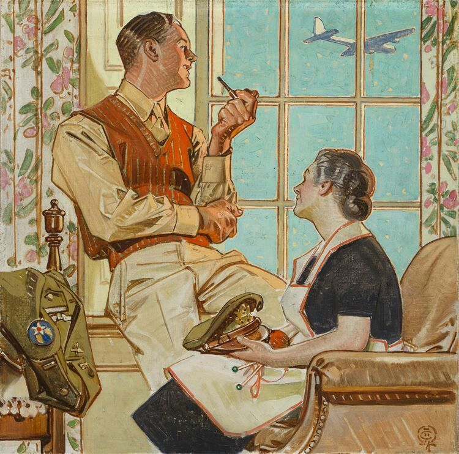
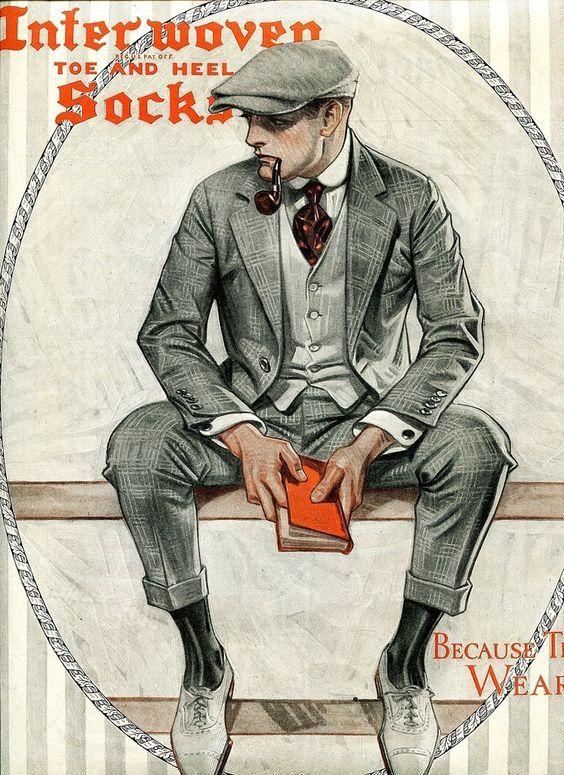
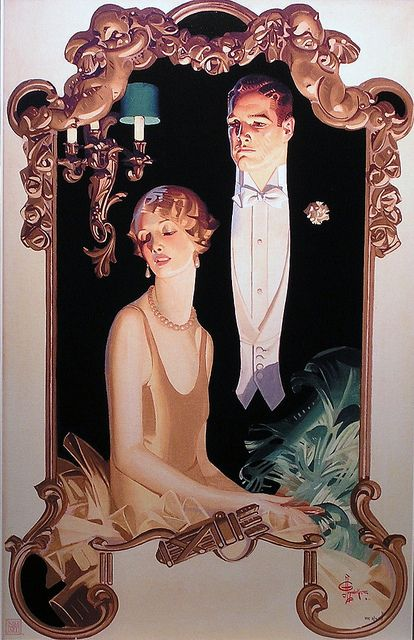
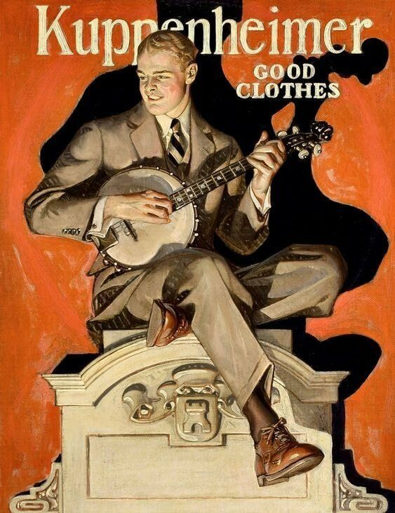

J. C. Leyendecker is one of the most iconic American Illustrators from the early 20th Century.
He is known for his commercial illustration works done for Saturday Evening Post, Arrow Collars, Collier’s and so on.
He developed his own unique style and created iconic imageries. He also influenced many illustration artists,
including Normal Rockwell, who is also well known American illustrator.
This website is demonstrating at showing the multiple perspectives of his works, process and its effect on current day.
It is my own interpretation of his work and a visual archive of his works.
 






